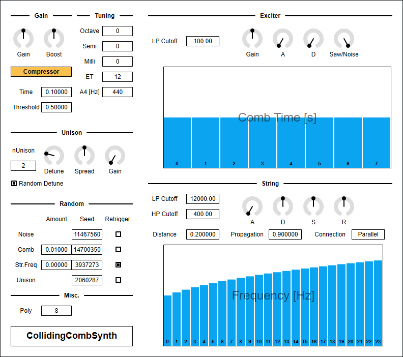
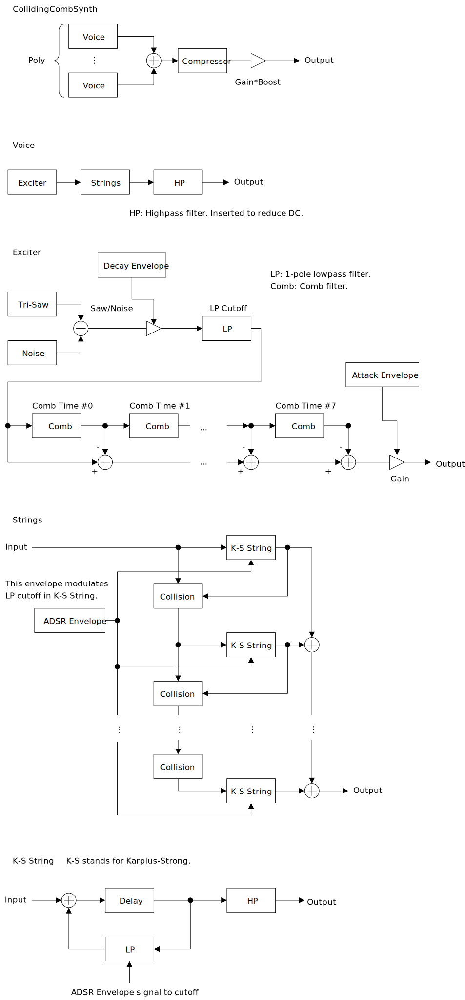

Update: 2021-11-20

CollidingCombSynth は Karplus-Strong アルゴリズムによる弦の物理モデルをぶつけることで、弦を擦ったときのような音が出る実験的なシンセサイザです。音程はでますがチューニングが難しいので、どちらかと言うと効果音に向いています。
CollidingCombSynth の利用には AVX 以降の SIMD 命令セットをサポートする CPU が必要です。
パッケージには次のビルドが含まれています。
Mac を持っていないので、 macOS ビルドはテストできていません。もしバグを見つけたときは GitHub のリポジトリに issue を作るか、 ryukau@gmail.com までメールを送っていただければ対応します。
Linux ビルドは Ubuntu 18.0.4 でビルドしています。また Bitwig と REAPER で動作確認を行っています。もし Ubuntu 18.04 以外のディストリビューションを使っているときは、プラグインが読み込まれないなどの不具合が起こることがあります。この場合はビルド手順に沿ってソースコードからビルドしてください。
名前が .vst3 で終わるディレクトリを OS ごとに決められた位置に配置してください。
/Program Files/Common Files/VST3/ に配置します。$HOME/.vst3/ に配置します。/Users/$USERNAME/Library/Audio/Plug-ins/VST3/ に配置します。DAW によっては上記とは別に VST3 をインストールできるディレクトリを提供していることがあります。詳しくは利用している DAW のマニュアルを参照してください。
解凍して出てきたディレクトリを OS ごとに決められた位置に配置すると使えるようになります。
/Users/$USERNAME/Documents/VST3 Presets/Uhhyou$HOME/.vst3/presets/Uhhyou/Users/$USERNAME/Library/Audio/Presets/Uhhyouプリセットディレクトリの名前はプラグインと同じである必要があります。 Uhhyou ディレクトリが無いときは作成してください。
プラグインが DAW に認識されないときは C++ redistributable をインストールしてみてください。インストーラは次のリンクからダウンロードできます。ファイル名は vc_redist.x64.exe です。
Ubuntu 18.0.4 では次のパッケージのインストールが必要です。
もし DAW がプラグインを認識しないときは、下のリンクの Package Requirements を参考にして VST3 に必要なパッケージがすべてインストールされているか確認してみてください。
REAPER の Linux 版がプラグインを認識しないときは ~/.config/REAPER/reaper-vstplugins64.ini を削除して REAPER を再起動してみてください。
注意: この節は英語で macOS を使用しているユーザからの報告によって作成されました。日本語でのエラーメッセージが分からなかったので曖昧な書き方になっています。
プラグインの初回起動時に「破損している」という趣旨のメッセージが表示されることがあります。この場合は、ターミナルを開いて、解凍した .vst3 ディレクトリに次のコマンドを適用してみてください。
プラグインは署名されていない (unsigned) 、または公証されていない (un-notarized) アプリケーションとして認識されることがあります。この場合は以下の手順を試してみてください。
sudo spctl --master-disable を実行。上記の手順を実行するとシステムのセキュリティが弱くなるので注意してください。元に戻すには以下の手順を実行してください。
sudo spctl --master-enable を実行。初回設定時は手動で次のファイルを作成してください。
/Users/ユーザ名/AppData/Roaming/UhhyouPlugins/style/style.json 。$XDG_CONFIG_HOME/UhhyouPlugins/style/style.json 。
$XDG_CONFIG_HOME が空のときは $HOME/.config/UhhyouPlugins/style/style.json 。/Users/$USERNAME/Library/Preferences/UhhyouPlugins/style/style.json 。既存の色のテーマを次のリンクに掲載しています。 style.json にコピペして使ってください。
style.json の設定例です。
{
"fontPath": "",
"foreground": "#000000",
"foregroundButtonOn": "#000000",
"foregroundInactive": "#8a8a8a",
"background": "#ffffff",
"boxBackground": "#ffffff",
"border": "#000000",
"borderCheckbox": "#000000",
"borderLabel": "#000000",
"unfocused": "#dddddd",
"highlightMain": "#0ba4f1",
"highlightAccent": "#13c136",
"highlightButton": "#fcc04f",
"highlightWarning": "#fc8080",
"overlay": "#00000088",
"overlayHighlight": "#00ff0033"
}16 進数カラーコードを使っています。
プラグインはカラーコードの 1 文字目を無視します。よって ?102938 や \n11335577 も有効なカラーコードです。
2 文字目以降のカラーコードの値に 0-9a-f 以外の文字を使わないでください。
以下は設定できる色の一覧です。設定に抜けがあるとデフォルトの色が使われます。
fontPath: フォント (*.ttf) の絶対パス。VST 3 版では実装されていません。foreground: 文字の色。foregroundButtonOn: オンになっているボタンの文字の色。 foreground か boxBackground のいずれかと同じ値にすることを推奨します。foregroundInactive: 非アクティブなタブの文字の色。background: 背景色。xboxBackground: 矩形の UI 部品の内側の背景色。border: 縁の色。borderCheckbox: チェックボックスの縁の色。borderLabel: パラメータセクションのラベルの左右の直線の色。unfocused: つまみがフォーカスされていないときの色。highlightMain: フォーカスされたときの色。スライダの値の表示にも使用されます。highlightAccent: フォーカスされたときの色。一部のプラグインをカラフルにするために使用されます。highlightButton: ボタンがフォーカスされたときの色。highlightWarning: 変更に注意を要する UI がフォーカスされたときの色。overlay: オーバーレイの色。overlayHighlight: フォーカスを示すオーバーレイの色。操作できる箇所を右クリックすると DAW によって提供されているコンテキストメニューを開くことができます。
つまみとスライダーでは次の操作ができます。
数値スライダーでは、上記に加えて次の操作ができます。
青い縦棒が並んだコントロール (BarBox) ではショートカットが使えます。ショートカットは BarBox を左クリックしてフォーカスすると有効になります。フォーカス後にマウスカーソルを BarBox の領域外に移動させると、ショートカットが一時的に無効になります。ショートカットによって変更されるパラメータはカーソルの位置によって変更できます。
左下のプラグイン名をクリックすると、よく使いそうな一部のショートカットを見ることができます。利用できる全てのショートカットを次の表に掲載しています。
| 入力 | 操作 |
|---|---|
| 左ドラッグ | 値の変更 |
| Shift + 左ドラッグ | 値の変更 (スナップ) |
| Ctrl + 左ドラッグ | デフォルト値にリセット |
| Ctrl + Shift + 左ドラッグ | 値の変更 (フレーム間の補間が無効) |
| ホイールドラッグ | 直線の描画 |
| Shift + ホイールドラッグ | 1 つのバーを編集 |
| Ctrl + ホイールドラッグ | デフォルト値にリセット |
| Ctrl + Shift + ホイールドラッグ | ロックの切り替え |
| a | 符号を交互に入れ替え |
| d | すべての値をデフォルト値にリセット |
| D | 最小値・中央値・最大値の切り替え |
| e | 低域の強調 |
| E | 高域の強調 |
| f | ローパスフィルタ |
| F | ハイパスフィルタ |
| i | 値の反転 (最小値を保存) |
| I | 値の反転 (最小値を 0 に設定) |
| l | マウスカーソル下のバーのロックの切り替え |
| L | 全てのバーのロックを切り替え |
| n | 最大値を 1 に正規化 (最小値を保存) |
| N | 最大値を 1 に正規化 (最小値を 0 に設定) |
| p | ランダムに並べ替え |
| r | ランダマイズ |
| R | まばらなランダマイズ |
| s | 降順にソート |
| S | 昇順にソート |
| t | 少しだけランダマイズ (ランダムウォーク) |
| T | 少しだけランダマイズ (0 に収束) |
| z | アンドゥ |
| Z | リドゥ |
| , (Comma) | 左に回転 |
| . (Period) | 右に回転 |
| 1 | すべての値を低減 |
| 2-9 | インデックスが 2n-9n の値を低減 |
Shift + 左ドラッグ のスナップは一部の BarBox だけで有効になっています。特定の BarBox にスナップを追加したいという要望があれば、気軽に GitHub のリポジトリに issue を開いてください。
Shift + ホイールドラッグ による 1 つのバーを編集は、マウスホイールが押された時点でカーソルの下にあるバーだけを編集します。マウスホイールが押されている間はカーソルの左右の位置に関わらず、選択したバーのみを編集できます。
Ctrl + Shift + ホイールドラッグ によるロックの切り替えでは、マウスホイールが押された時点でカーソルの下にあるバーの反対の状態が残り全てに適用されます。例えばカーソルの下のバーがアクティブだったときはロックに切り替えます。
Compressor を有効にしていても音量の変化が激しいので、 CollidingCombSynth の後に必ずリミッタを挿入することをお勧めします。
図が小さいときはブラウザのショートカット Ctrl + マウスホイール や、右クリックから「画像だけを表示」などで拡大できます。
図で示されているのは大まかな信号の流れです。実装と厳密に対応しているわけではないので注意してください。

出力音量です。 Gain の値と Boost の値は掛け合わされます。
masterGain = Gain * Boostボイスごとに用意されたコンプレッサを有効・無効にします。
コンプレッサのアタック・リリース時間です。
Time の音を大きくするほうが自然な聞こえ方に近くなりますが、音量のピークが抑えきれないときがあります。このときは Threshold の値を下げてみてください。
コンプレッサが動作を始める音量です。通常は 1.0 以下に設定することをお勧めします。
全体の音の高さを変更します。
Octave: オクターブSemi: 半音Milli: 半音の 1 / 1000 。 1 / 10 セント。音律を変更します。
ET は Equal Temperament (平均律) の略です。 ET が 12 のときは 12 平均律となります。 ET を 12 よりも小さくすると無音になる範囲が増えるので注意してください。
A4 [Hz] は、音程 A4 の周波数です。
ユニゾンに使うボイスの数です。
Misc. の Poly を増やすことで nUnison が大きいときに起こるリリースの途切れを減らすことができますが、引き換えに動作が重くなります。
Detune はユニゾンに使われているボイスのピッチをずらす量です。
Random Detune のチェックを入れると、ピッチがずれる量がノートオンごとにランダムに変わるようになります。
random = RandomDetune ? rand() : 1
detune = pitch * (1 + random * unisonIndex * Detune)ユニゾンの左右の広がりの量です。
ユニゾンに使われているボイスの音量をランダムに変更する量です。
4 つの乱数生成器の設定です。
Comb Time をランダマイズする乱数です。String セクションの Frequency をランダマイズする乱数です。Unison セクションの Detune と Gain パラメータで使われる乱数です。ランダマイズの度合いです。 0 のときはランダマイズが無効になります。
乱数列のシード値です。この値を変えると生成される乱数列が変わります。
チェックを入れるとノートオンのたびにシード値を設定しなおして、同じ乱数列を使用します。
物理モデルを励起 (excite) する信号の設定です。例えばギターのピッキング、ピアノの弦とハンマーの衝突、太鼓の打面とばちの衝突などが励起にあたります。
CollidingCombSynth のエキサイタは鋸歯波・ノイズオシレータの出力を、直列につないだ 8 個のコムフィルタに通しています。
オシレータ出力にかけるローパスフィルタのカットオフ周波数です。表示される値の単位は Hz です。
オシレータの音量です。
A はオシレータのアタック時間 (attack) 、 D はオシレータのディケイ時間 (decay) です。
A を右に回すことでアタックが緩やかな音が作れます。
鋸歯波 (saw) オシレータとガウシアンノイズのミックスの比率です。左いっぱいに回すと鋸歯波のみ、右いっぱいに回すとノイズのみが出力されます。
オシレータから出力された信号が通るコムフィルタの時間です。表示される値の単位は秒です。
Karplus-Strong アルゴリズムによる弦の設定です。
各弦のフィードバックに用意されたローパスフィルタのカットオフ周波数です。表示される値の単位は Hz です。
各弦の出力にかけるハイパスフィルタのカットオフ周波数です。表示される値の単位は Hz です。
隣り合う弦の間の距離です。 1 つの弦の出力の瞬時値が Distance を超えると、超えた音量が隣の弦に伝わります。
弦が衝突したときに失う力を調整します。値が小さいほど衝突後の跳ね返りが弱くなります。
弦のつなげ方です。
Parallel: 弦を並列につなぎます。励起信号は 0 番目の弦から順に、衝突後の跳ね返りを加えつつ順に入力されます。Serial: 弦を直列につなぎます。励起信号は 0 番目の弦にだけに入力されます。あとは N 番目の弦の出力が N + 1 番目の弦へと衝突を繰り返しながら伝わっていきます。 Parallel に比べると音量の変化がより激しくなるので、 Compressor をオフにするときは注意してください。LP Cutoff を変調するエンベロープのパラメータです。実質的に音量エンベロープと似たような働きをします。
A (Attack) : 鍵盤を押した瞬間から LP Cutoff の値に到達するまでのアタック時間。D (Decay) : LP Cutoff の値から (LP Cutoff) * S の値になるまでのディケイ時間。S (Sustain) : アタックとディケイが終わった後に鍵盤を押し続けているときのサステインの大きさ。R (Release) : 鍵盤から指を離したあとにカットオフ周波数が 0 になるまでのリリース時間。弦の基本周波数です。弦の最終的な周波数は音程と Frequency を掛け合わせた値になります。
noteFrequency = A4Hz * pow(2, Octave + (Semi - 69) / ET + Milli / (ET * 1000))
stringFrequency = Frequency * noteFrequencybypass パラメータの挙動を修正。この修正によって、ホストがミュート中のプラグインにノートを送り続けても、ミュート解除とともにそれまでに送られたノートがすべて再生されなくなった。このバグは VST 3 の bypass パラメータを正しく実装しているホストでのみ発生していた。CollidingCombSynth のライセンスは GPLv3 です。 GPLv3 の詳細と、利用したライブラリのライセンスは次のリンクにまとめています。
リンクが切れているときは ryukau@gmail.com にメールを送ってください。
VST is a trademark of Steinberg Media Technologies GmbH, registered in Europe and other countries.